📊 指标均值 · 清晰呈现本类素材基准指标，帮你快速定位差距，校准优化方向
消耗(均值)
—增长量(均值)
—CTR (均值)
3.86%CVR (均值)
9.55%3s完播 (均值)
60.7%播放时长(均值)
21.0s📚 方法论沉淀 · 拆解开篇类型核心打法，吃透爆款底层逻辑，轻松拿捏创作节奏
🎬开篇方式细分· 还原头部素材的爆款开篇套路，直接参考高起量创作范式（推荐指数=消耗量级）
达人明星背书型⭐⭐⭐⭐⭐
开篇即引入秦岚、刘晓庆、董璇等高知名度明星的直播切片或同款推荐，消耗量级最高，适合品牌型产品快速建立信任。
口播剧情悬念型⭐⭐⭐⭐
通过夫妻床上对话、恶意退款维权、山东大姐退货、差评反转等生活化冲突场景切入，3s完播率高，适合跑量素材。
达人口播痛点型⭐⭐⭐⭐
专家或达人直接对镜指出『粉底液显老』『皮肤黑长斑』『眼袋老10岁』等具体问题，精准筛选目标受众，转化率稳定。
达人测评展示型⭐⭐⭐
开篇即展示撕膜提拉、30秒上妆、原相机实拍等即时视觉效果，用真实效果直接种草，适合功效型护肤品。
📋脚本框架· 标准化脚本流程拆解，素材组合直接照着用，降低创作试错成本（6 段）
A
悬念/痛点开场
⏱ 0-5s
通过高冲突剧情或精准痛点话术，在极短时间内抓住用户注意力，降低跳出率。
📌 反转剧情（恶意退款维权、退货大姐火了）、年龄焦虑（家长会被误认20出头）、或直击痛点（粉底液显老、皮肤黑长斑）。
B
产品亮相
⏱ 5-15s
快速承接开篇悬念，引出核心解决方案，建立产品第一印象。
📌 展示产品包装与质地特写，强调『不用调不用配』『洗完脸直接用』『四效合一』的便捷卖点。
C
明星/达人背书
⏱ 15-40s
利用明星影响力或专业人设为产品品质背书，快速建立信任感。
📌 秦岚、刘晓庆、董璇等明星直播切片轮播，或清华学霸、化学专业老公等专业人设出镜背书。
D
卖点轰炸+效果展示
⏱ 40-70s
深度解析成分功效并展示即时使用效果，强化产品可信度与种草力。
📌 成分科普（人参皂苷CK、玻色因、左旋VC）配合上脸前后对比，突出不假白、不卡粉、30秒服帖、提拉紧致。
E
用户证言
⏱ 70-90s
通过多维度素人反馈模拟真实口碑环境，消除用户最后疑虑。
📌 街头采访素人好评、粉丝手写信朗读、60岁大姐改善对比，强调『又便宜又好用』『回购多次』。
F
促销引导下单
⏱ 90s+
利用限时福利和稀缺性制造紧迫感，促成最终转化下单。
📌 喊话『全场一折』『拍一发八』『买一送一』，强调周年庆/中秋国庆限时、库存紧张，引导点击链接进直播间。
☁️核心词云· 提炼高频重点标签，靠前标签即高机会，快速抓准流量密码（科普词 / 剧情词）
📚 科普词 · 20 词
人参皂苷CK胶原蛋白肽玻色因左旋VC氨甲环酸NAD+烟酰胺鱼子精华肝素钠24K金胶原极光甘草玫瑰发酵蜂蜡成膜黄芪抗皱四效合一皂苷CK胶原蛋白山参皂苷CK玻尿酸淡纹肽
🎭 剧情词 · 20 词
退货大姐恶意退款夫妻对话家长会韩国清潭洞法国签约工厂直发周年庆直播间福利手写信差评反转雪地温泉年龄反差冻龄闺蜜母女互动街头采访开箱囤货中秋大促70岁奶奶没脸见人
💬常见爆款话术· 整理高转化爆款话术，直接复用提升素材起量率与吸引力（≥2 条素材出现，产品名已隐藏）
🚀跑量关键点· 跑量必备要素清单，逐项 check，确保创作不踩坑
- **年龄反差制悬念**：40+/70岁冻龄出镜，3秒内抛年龄数字制造视觉冲击
- **剧情冲突抓停留**：退货维权/婆媳对话等生活场景开场，降低广告感引共鸣
- **权威人设建信任**：明星/专家/化妆师人设开场，用职业背书提升说服力
- **痛点开场激焦虑**：前3秒直击显老暗沉等核心焦虑，放大衰老恐惧
- **悬念钩子引好奇**：反直觉提问或『得罪人的秘密』式钩子吸引停留
📈高光时序数据· 近 7 天日均真实播放进度数据
73/97 条素材有高光时序（覆盖率 75.3%）；关键转化点主要集中在 15-30s。点击/点赞/转发/流失关键点分别为 180/56/49/103 个。
内容策略与转化表现
内容承接
正向 123 · 流失 47 · 平均 16.5s
点击 63 / 点赞 38 / 转发 22 / 流失 47
点击 63 / 点赞 38 / 转发 22 / 流失 47
“旁白+字幕：『为了参加儿子的家长会』（模特与男性牵手走在户外）”
行动催单
正向 48 · 流失 19 · 平均 26.9s
点击 38 / 点赞 2 / 转发 8 / 流失 19
点击 38 / 点赞 2 / 转发 8 / 流失 19
“旁白：『赶紧点进来，刚好我今天在开播，给你们安排一下』（点击头像动画引导）”
痛点问题
正向 36 · 流失 10 · 平均 19.5s
点击 28 / 点赞 4 / 转发 4 / 流失 10
点击 28 / 点赞 4 / 转发 4 / 流失 10
“秦岚：『粉底液留给十几岁的小姑娘用，现在还在用粉底液的，你是怕自己脸暗沉的太慢了』”
价格促销
正向 32 · 流失 9 · 平均 35.3s
点击 26 / 点赞 2 / 转发 4 / 流失 9
点击 26 / 点赞 2 / 转发 4 / 流失 9
“何泓姗：『谁能拒绝一年一次的一折V脸胶原棒呢？』”
实测演示
正向 31 · 流失 13 · 平均 25.5s
点击 22 / 点赞 3 / 转发 6 / 流失 13
点击 22 / 点赞 3 / 转发 6 / 流失 13
“博主：『非常适合秋天的口红』(涂抹口红特写)”
口碑证明
正向 23 · 流失 7 · 平均 21.4s
点击 16 / 点赞 3 / 转发 4 / 流失 7
点击 16 / 点赞 3 / 转发 4 / 流失 7
“奶奶：『他们都说我一把年纪了，说我做什么项目了』”
- 内容可解释率 100.0%：388/388 个关键点匹配到对应脚本或结构文案。
- 正向转化最强的是「内容承接」：出现 123 个点击/点赞/转发关键点，平均发生在 16.5s；典型内容“旁白+字幕：『为了参加儿子的家长会』（模特与男性牵手走在户外）”。
- 主要流失风险来自「内容承接」：对应 47 个流失关键点，平均发生在 20.3s；需优先压缩或改写“旁白：『而且你会发现，做完水光的脸，跟你用什么面膜啊、爽肤水、精华出来的完全不一样』（出现面膜、水瓶、精华图标）”。
关键点内容证据
634a8f5d · 15.0s · 流失最大流失点（142.6）用户在此大量划走
9d79d766 · 53.0s · 流失最大流失点（142.4）用户在此大量划走
90c334e4 · 16.0s · 流失最大流失点（142.3）用户在此大量划走
59f0b0de · 54.0s · 流失最大流失点（142.0）用户在此大量划走
fde18d57 · 42.0s · 流失最大流失点（141.6）用户在此大量划走
9e075b83 · 45.0s · 流失最大流失点（141.6）用户在此大量划走
7fad6314 · 139.0s · 流失最大流失点（141.6）用户在此大量划走
83b2814e · 0s · 流失最大流失点（141.4）用户在此大量划走
🏆 代表素材关键帧拆解 · 品牌 / 非品牌各 Top5（按消耗降序）
🏪 品牌素材 Top5（按消耗降序）
#1
消耗 — · 增长量 — · CTR 3.42% · CVR 10.76% · 3s完播 51.8% · 播放时长 10.1s
🎂 转化人群年龄分布 主力 50+
40- 8.7%40-50 41.6%50+ 49.6%
0-13 0.2%19-24 0.2%25-29 0.3%30-34 1.2%35-39 6.9%40-44 17.7%45-49 23.9%50-54 19.9%55-59 15.2%60-64 8.9%65+ 5.7%
开篇类型属于达人生活场景+多明星背书型。开篇以轻熟女性参加家长会为场景切入，展示使用产品后被误认为20出头的惊喜效果，制造好奇心。接着切入秦岚、肖涵、何泓姗三位明星的推荐切片，用『水乳留给小姑娘』『不流行用水乳了』等话术制造焦虑，强调产品针对干黄垮肌肤的功效，以及第二天皮肤饱满、细纹淡化的即时效果。重点展示产品使用便捷性：圆润笔管设计、不用调配、30秒搞定、早晚各一次。结尾以秦岚联合某品牌的宠粉福利收尾，拍二发四引导下单。
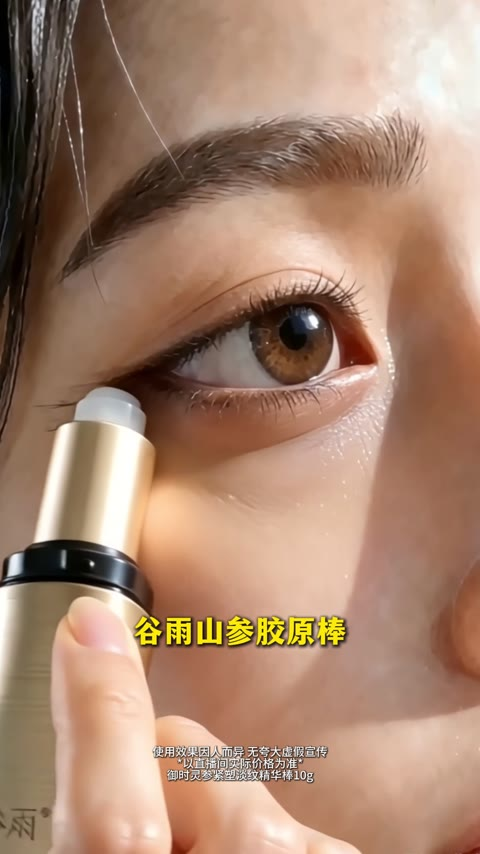
悬念开场
0-6s
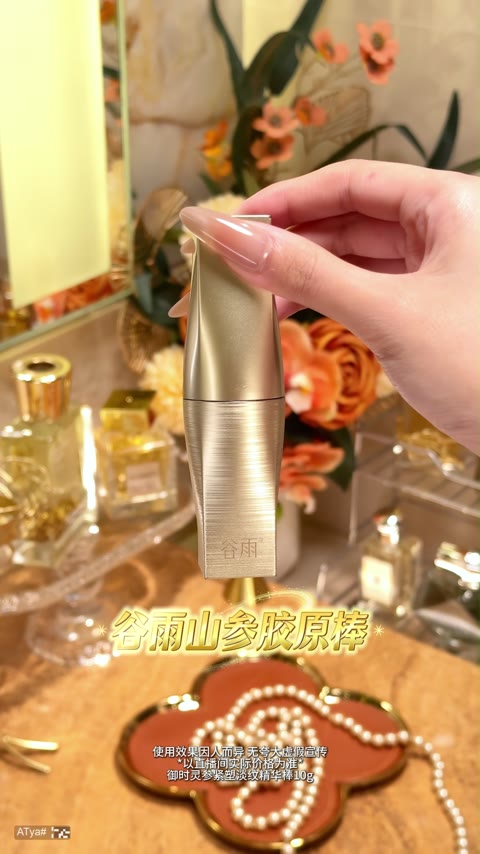
明星背书
7-22s
明星种草
23-35s
福利喊话
36-43s
卖点轰炸
44-55s
#2
消耗 — · 增长量 — · CTR 2.56% · CVR 3.46% · 3s完播 57.1% · 播放时长 10.5s
🎂 转化人群年龄分布 主力 40-50
40- 21.9%40-50 49.7%50+ 28.4%
0-13 0.3%19-24 0.4%25-29 1.0%30-34 4.8%35-39 15.4%40-44 24.9%45-49 24.7%50-54 15.8%55-59 8.1%60-64 3.2%65+ 1.4%
开篇类型属于颜值美女+异国vlog信任背书型。开篇以日本街头实拍引入，展示40多岁却状态极佳的日本闺蜜，用『不可理喻』的年龄反差制造悬念钩子。接着通过闺蜜推荐引出水光仪产品，展示倒精华、喷雾上脸的使用过程。重点阐述水光仪的核心原理——『有力度把精华打到皮肤深层』，对比普通护肤品只能表面吸收的痛点。最后用『美容院四位数vs居家不到一块钱』的价格锚点制造超高性价比认知，引导用户点击头像进入直播间下单。
开篇悬念
0-6s
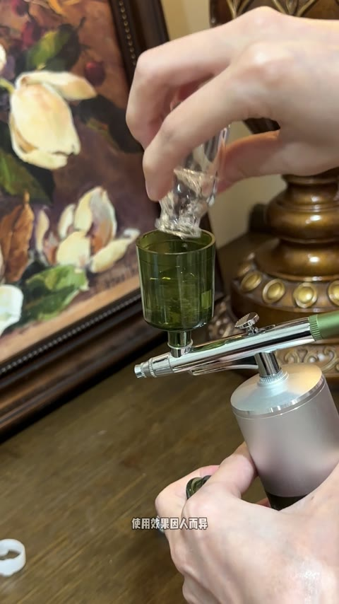
产品亮相
7-12s
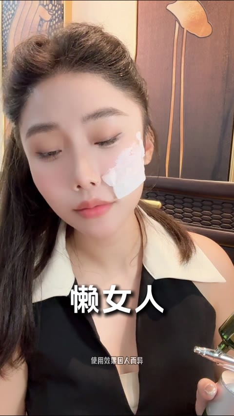
痛点引入
13-18s
卖点轰炸
19-32s
效果对比
33-46s

#3
消耗 — · 增长量 — · CTR 2.79% · CVR 16.75% · 3s完播 88.8% · 播放时长 44.5s
🎂 转化人群年龄分布 主力 50+
40- 13.4%40-50 27.6%50+ 59.0%
19-24 0.4%25-29 1.7%30-34 3.8%35-39 7.5%40-44 11.6%45-49 16.0%50-54 17.2%55-59 16.6%60-64 13.9%65+ 11.2%
开篇类型属于达人口播+明星背书+促销引导型。开篇男博主以『中年美女必须养成的6个习惯』为钩子锁定目标人群，迅速引出胶原泡面膜产品。接着通过『断崖式衰老的本质是胶原蛋白流失』制造痛点焦虑，并展示29.9元福利价建立价格认知。重点展示贾乃亮『打一折』的促销切片和多位女博主的使用心得，强调『不用调不用配』的便捷性和『抗皱紧致提亮保湿』多效合一功效。加入演员温峥嵘的安利背书和街头采访真人证言。结尾直播间风格强调『29元到手4件』的周年庆福利，营造错过就亏的紧迫感引导下单。

悬念开篇
0-3s

痛点引入
3-14s

价格锚点
14-25s

明星促销
25-37s

卖点轰炸
37-65s
#4
消耗 — · 增长量 — · CTR 1.04% · CVR 6.95% · 3s完播 30.0% · 播放时长 5.9s
🎂 转化人群年龄分布 主力 40-50
40- 12.6%40-50 44.6%50+ 42.8%
19-24 0.2%25-29 0.4%30-34 2.2%35-39 9.8%40-44 20.6%45-49 24.0%50-54 21.3%55-59 13.1%60-64 5.7%65+ 2.7%
开篇类型属于达人口播+明星背书型。开篇达人直接抛出『夏天用粉膏显老』的痛点话术，快速引出某品牌精华贵妇膏产品。接着通过秦岚口播强化『粉底液让脸暗沉』的焦虑，用明星身份背书产品价值。重点展示产品『四效合一』核心卖点，演示奶油质地上脸丝滑、30秒成膜不掉的效果，配合左右脸对比证明遮瑕提亮力。加入陈紫函推荐切片，展示水润吸收和高级水光感效果。结尾以直播间宠粉福利活动引导下单转化。
痛点引入
0-5s
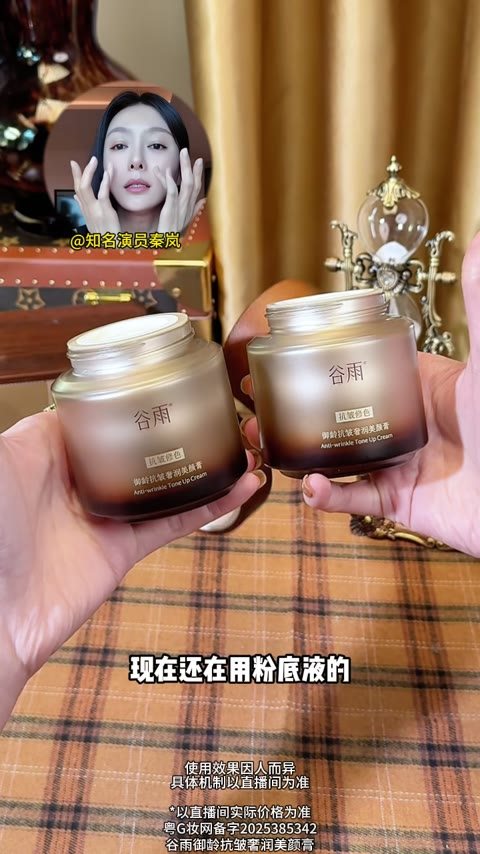
明星背书
5-12s
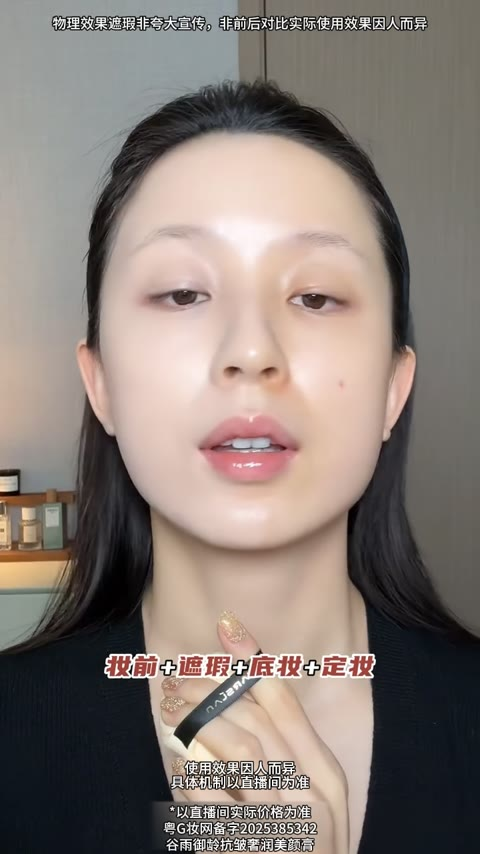
卖点轰炸
12-33s
产品演示
33-47s
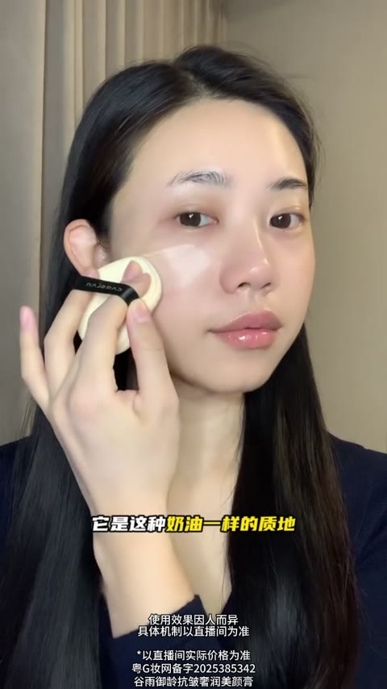
成分背书
47-56s

#5
消耗 — · 增长量 — · CTR 3.26% · CVR 8.00% · 3s完播 49.8% · 播放时长 11.9s
🎂 转化人群年龄分布 主力 40-50
40- 11.8%40-50 45.3%50+ 42.9%
25-29 0.6%30-34 2.5%35-39 8.8%40-44 19.8%45-49 25.4%50-54 21.2%55-59 13.0%60-64 5.9%65+ 2.8%
开篇类型属于达人测评+明星背书型。开篇博主以『韩国做完项目』的真实状态出镜，撕下贴膜展示轮廓紧致效果，用原相机实拍强调『头包脸』的提拉感。接着切换另一位博主展示3.0版本配方的使用过程，顶光拍摄呈现『皮贴骨』状态。重点进入产品教学环节，纠正贴错面的常见错误，讲解NAD+成分与黄金提拉点的专业贴法。随后引入董璇的直播、红毯、车内生图画面作为明星背书，强调『女明星物理外挂』的信任点。结尾展示直播间机制，三盒加赠品的促销组合引导下单。

达人效果展示
0-24s

产品使用演示
25-39s

产品教学纠错
40-59s

卖点轰炸
60-89s

明星背书
90-115s
🏬 非品牌素材 Top5（按消耗降序）

#1
消耗 — · 增长量 — · CTR 5.42% · CVR 1.67% · 3s完播 70.4% · 播放时长 22.7s
🎂 转化人群年龄分布 主力 50+
40- 0.0%40-50 0.0%50+ 100.0%
50-54 9.7%55-59 14.3%60-64 19.5%65+ 56.5%
开篇类型属于新闻播报+专家背书+明星代言型。开篇以模拟新闻节目形式引入，两位主播用『北京已经传开了』『做梦都没想到』等悬念话术吸引停留。接着切换外景记者实地探访藏族专家研究院，专家对镜头承诺『90岁用上10年眼袋都不愁』建立信任。中段展示多位中老年女性使用效果，强调操作简单、适合50岁以上人群。随后插入街头采访和老中医诊室场景增强口碑背书。重点展示刘晓庆亲自代言，强调『唯独这次破例推荐』。结尾以周年庆一折、拍一发二、送精华液等福利机制引导下单转化。

新闻式悬念开场
0-14s

实地探访背书
14-40s

产品演示
40-56s

使用方法介绍
56-73s

用户证言
73-105s
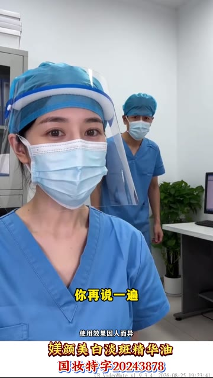
#2
消耗 — · 增长量 — · CTR 3.12% · CVR 7.40% · 3s完播 61.9% · 播放时长 14.0s
🎂 转化人群年龄分布 主力 50+
40- 1.6%40-50 5.5%50+ 92.8%
30-34 0.5%35-39 1.1%40-44 1.9%45-49 3.6%50-54 6.2%55-59 11.3%60-64 19.6%65+ 55.7%
开篇类型属于达人人设口播+多用户证言型。开篇以医护人设达人用『告诉大家一个得罪人的秘密』制造悬念，点明长斑是黑色素堆积问题，引出媄颜淡斑油。接着通过达人口播强调产品效果猛、斑点怕它，建立产品力认知。中段切入阳姐与用户居家对话场景，传递正确用法（晚上抹白天不抹），同时展示60岁婆婆使用后的惊喜反应增强信任。随后抛出全场一折的促销信息制造紧迫感。后段阳姐详细讲解斑点成因和产品使用方法，配合街头采访素人证言『便宜又好用』『舍不得退』强化口碑。结尾以宠粉福利机制+工厂直发+限时恢复原价99元引导下单。
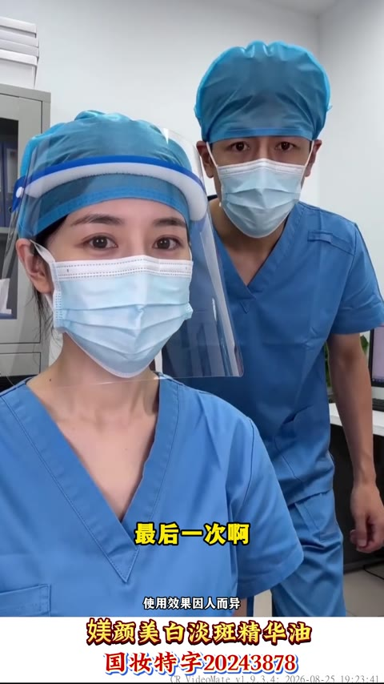
悬念开场
0-3s
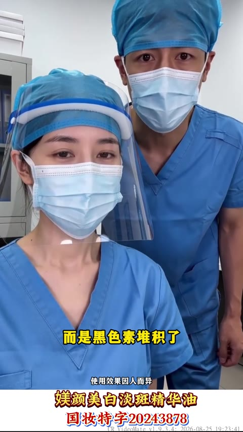
痛点引入
3-9s
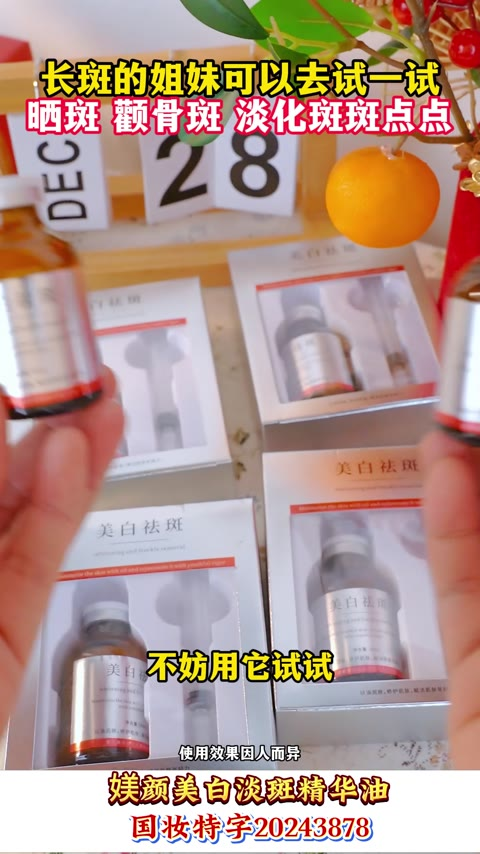
卖点轰炸
10-21s
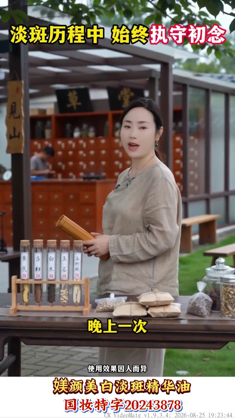
用户证言
22-34s
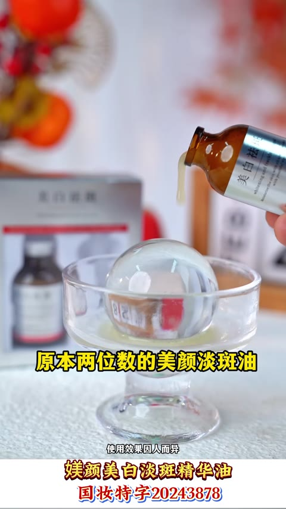
促销信息
35-44s
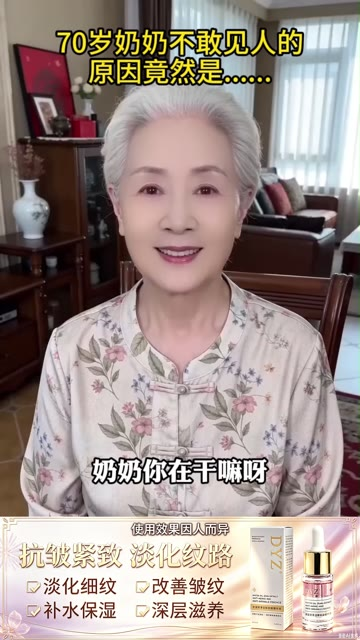
#3
消耗 — · 增长量 — · CTR 10.98% · CVR 5.01% · 3s完播 64.3% · 播放时长 21.0s
🎂 转化人群年龄分布 主力 50+
40- 0.0%40-50 0.0%50+ 100.0%
50-54 3.7%55-59 9.1%60-64 18.7%65+ 68.5%
开篇类型属于达人口播+专家讲解型。开篇以70岁银发奶奶的自述制造悬念，用『没脸见人』的反差话术吸引停留，展示其红润平滑的皮肤状态。接着切换到专家阳阳的讲解，通过平板展示婆婆纹、括号纹等皱纹痛点，建立专业信任。随后多位用户出镜表达感谢，形成口碑背书。重点展示产品功效和使用建议，强调不用去机构花冤枉钱。穿插街头采访快速好评，营造热销氛围。最后通过全场一折、工厂直发、50年国货老品牌等促销信息和品牌背书，制造紧迫感引导下单。
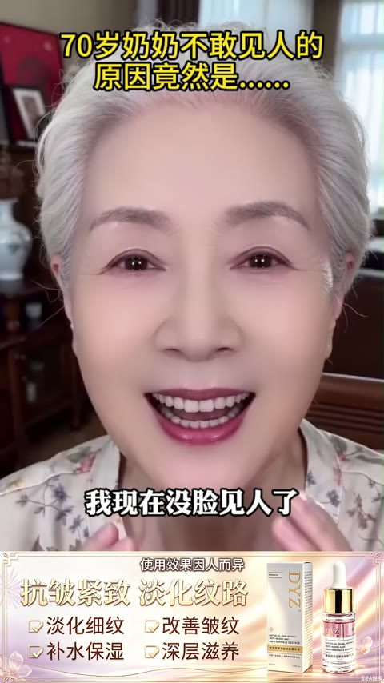
悬念开篇
0-9s
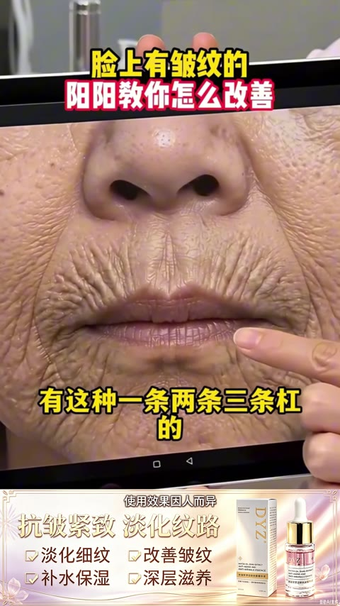
痛点讲解
9-19s
产品亮相
19-21s
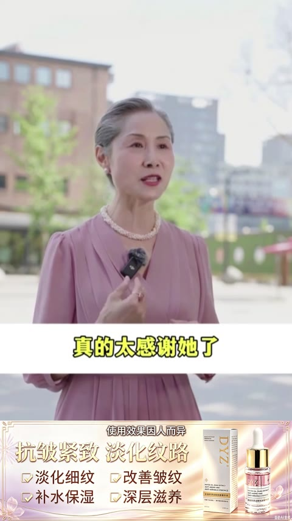
用户证言
21-29s
卖点轰炸
29-41s
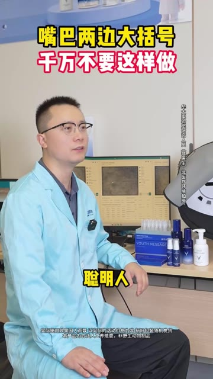
#4
消耗 — · 增长量 — · CTR 2.09% · CVR 2.78% · 3s完播 55.2% · 播放时长 9.4s
🎂 转化人群年龄分布 主力 40-50
40- 6.4%40-50 47.9%50+ 45.7%
25-29 0.3%30-34 1.1%35-39 5.1%40-44 19.3%45-49 28.6%50-54 22.3%55-59 13.1%60-64 6.4%65+ 3.9%
开篇类型属于专家人设口播+CEO背书型。开篇由穿白大褂的专家出镜，用『聪明人都不会去动大括号』的反向警告制造好奇，随后列举法令纹、抬头纹、川字纹、眼角纹等痛点，强调医美风险『整个人会僵』。接着自然引出产品『某品牌小鹿精华』作为替代方案。重点展示某品牌集团CEO尹烨的背书切片，强调链博会首发、鹿茸成分的生态级研究。通过旁白介绍东北纯血梅花鹿顶端2%蜡片、-40℃冻干锁鲜技术等核心卖点。展示14天/28天功效报告数据，以及达人使用反馈。结尾引导点击下方链接购买，强调『链接还在优惠就还在』。
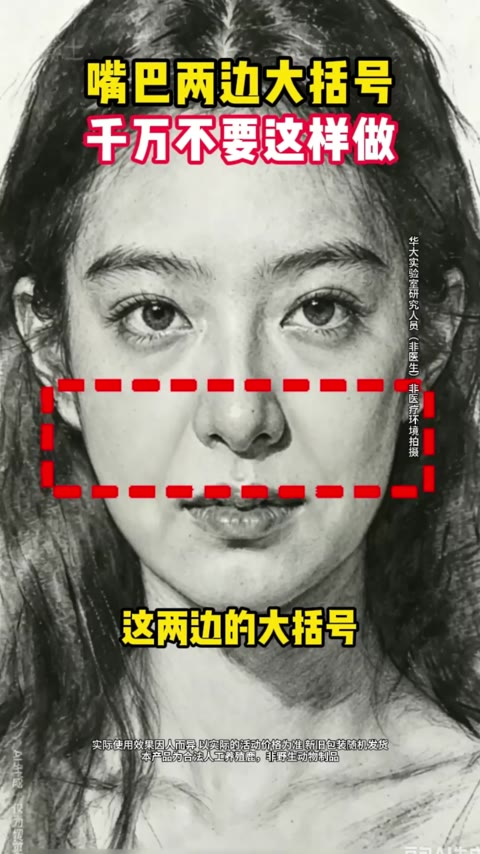
痛点+悬念开场
0-5s
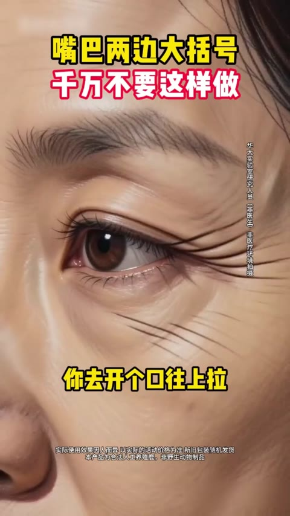
痛点强化
5-13s
产品亮相
13-17s
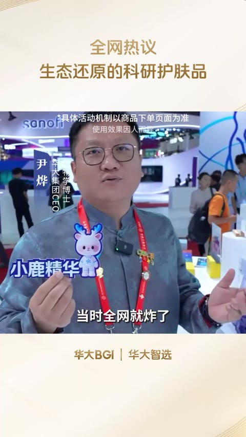
CEO背书
17-28s
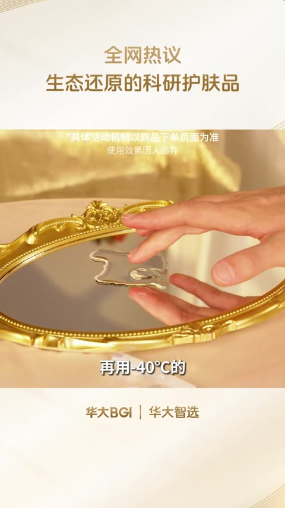
卖点轰炸
28-43s
#5
消耗 — · 增长量 — · CTR 4.70% · CVR 12.00% · 3s完播 86.1% · 播放时长 49.9s
🎂 转化人群年龄分布 主力 50+
40- 0.0%40-50 0.0%50+ 100.0%
50-54 5.9%55-59 10.5%60-64 19.0%65+ 64.6%
开篇类型属于素人口播+反转悬念型。开篇以『70岁奶奶不敢见人』的悬念标题吸引停留，奶奶展示紧致皮肤状态形成年龄反差冲击。接着亮出产品，强调『不用调不用配，洗完脸直接用』的便捷卖点，并用『口红可以不买但这个必须买』制造urgency。随后切入阶梯式降价话术，从99元降到69元再到全场一折，配合多位素人街采证言『便宜好用、回购多次』建立信任。中段主播阳阳以人设口播针对眼袋泪沟松弛人群种草，强调良心产品。结尾展示工厂生产线和快递发货场景，突出工厂直发无中间商，以周年庆倒计时促成转化。
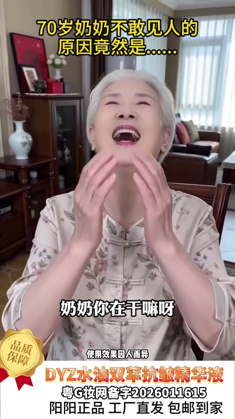
悬念开篇
0-3s
痛点引入
3-8s
产品亮相
8-15s
场景种草
15-22s
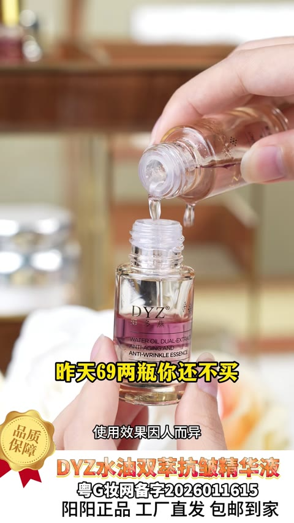
价格轰炸
22-32s